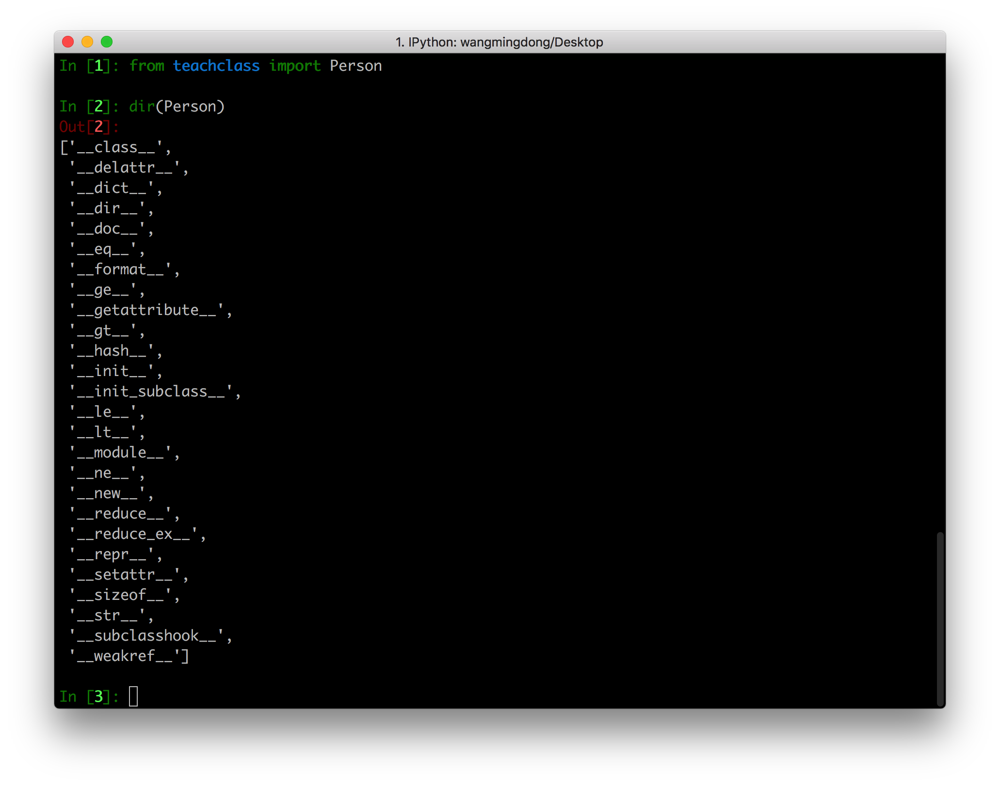
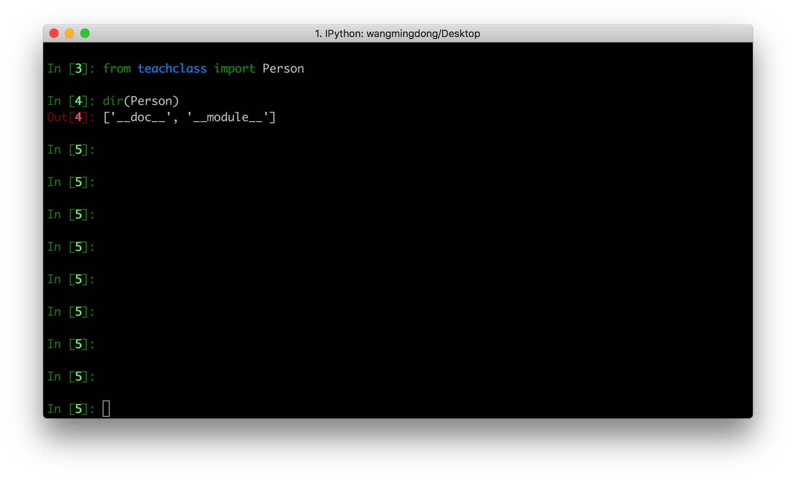

内建属性
1. 内建属性
内建属性，往往是指我们，在使用类时，可以直接使用的那些功能，例如__new__、__init__等
1.1 新式类
Python3中定义的类都是新式类的，无论是否写明一个类继承object，都会间接或直接继承object
teachclass.py
class Person(object):
pass
Python3中类的内建属性和方法

1.2 经典类(旧式类)
# Python2中无继承父类，称之经典类。Python3中已默认继承object
class Person:
pass

2. 常用内建属性
| 常用专有属性 | 说明 | 触发方式 |
|---|---|---|
__init__ |
构造初始化函数 | 创建实例后,赋值时使用,在__new__后自动调用 |
__new__ |
生成实例所需属性 | 创建实例时 |
__class__ |
实例所在的类 | 实例.__class__ |
__str__ |
实例字符串表示,可读性 | print(类实例)如没实现，使用repr结果 |
__repr__ |
实例字符串表示,准确性 | 类实例 回车 或者 print(repr(类实例)) |
__del__ |
析构（对象被删除前做清理工作） | del 实例后，如果对象引用计数为0，则自动调用 |
__dict__ |
实例自定义属性 | vars(实例.__dict__) |
__doc__ |
类文档,子类不继承 | help(类或实例) |
__getattribute__ |
属性访问拦截器 | 访问实例属性时 |
__bases__ |
类的所有父类构成元素 | 类名.__bases__ |
3. __getattribute__属性
__getattribute__功能很强大：能够完成属性访问时进行拦截
例子:
class Itcast(object):
def __init__(self,subject1):
self.subject1 = subject1
self.subject2 = 'cpp'
# 属性访问时拦截器，打log
def __getattribute__(self,obj):
if obj == 'subject1':
print('log subject1')
return 'redirect python'
else: # 测试时注释掉这2行，将找不到subject2
return object.__getattribute__(self,obj)
def show(self):
print('this is Itcast')
s = Itcast("python")
print(s.subject1)
print(s.subject2)
运行结果:
log subject1
redirect python
cpp
getattribute的坑
class Person(object):
def __getattribute__(self,obj):
print("---test---")
if obj.startswith("a"):
return "hahha"
else:
return self.test
def test(self):
print("heihei")
t.Person()
t.a # 返回hahha
t.b # 会让程序死掉
# 原因是：当t.b执行时，会调用Person类中定义的__getattribute__方法，但是在这个方法的执行过程中
# if条件不满足，所以 程序执行else里面的代码，即return self.test 问题就在这，因为return 需要把
# self.test的值返回，那么首先要获取self.test的值，因为self此时就是t这个对象，所以self.test就是
# t.test 此时要获取t这个对象的test属性，那么就会跳转到__getattribute__方法去执行，即此时产
# 生了递归调用，由于这个递归过程中 没有判断什么时候推出，所以这个程序会永无休止的运行下去，又因为
# 每次调用函数，就需要保存一些数据，那么随着调用的次数越来越多，最终内存吃光，所以程序 崩溃
#
# 注意：以后不要在__getattribute__方法中调用self.xxxx